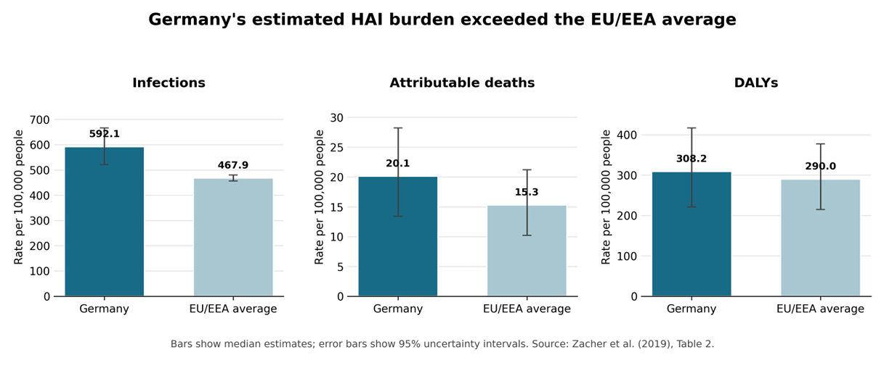

A reassuring percentage can hide a larger problem
A lower percentage of hospital patients with an infection sounds reassuring. But that percentage does not tell us how many infections occur across a country each year, or how much illness and loss of life they cause.
Healthcare-associated infections are infections acquired while receiving medical care. Understanding their wider impact matters when comparing healthcare systems and deciding where prevention efforts deserve attention. Relying on one measure can leave a substantial burden overlooked.
A study by Zacher and colleagues, published in 2019 using hospital survey data from 2011–2012, illustrates this problem. Germany had lower infection prevalence among hospital patients than the European Union and European Economic Area average, yet a higher estimated annual infection rate across its population.
How can both findings be true? And what should readers consider before interpreting a low hospital infection percentage as evidence of a small public-health problem?
Two measures, two different questions
Hospital prevalence asks: What proportion of patients had an infection when they were surveyed? It provides a snapshot of the patients receiving hospital care.
Annual population incidence asks: How many new infections were estimated to occur during a year, relative to the country’s population? It captures a different aspect of the problem, including the scale of hospital use.
The denominators matter. One measure concerns hospital patients; the other concerns all residents. A country can therefore have a relatively low proportion of infected hospital patients while still experiencing many infections across its population when hospital use is high.
Neither measure replaces the other. Together, they give readers a fuller basis for understanding the impact of infections associated with hospital care.
What the researchers measured
Zacher et al. (2019) combined hospital survey data collected across Europe in 2011–2012 with Eurostat population and hospital-discharge data to estimate the annual impact of five selected healthcare-associated infections. Germany’s estimates refer to 2011.
The researchers converted the survey snapshot into estimates of new infections, infection-related deaths and healthy years of life lost through illness or premature death. These were model-based estimates, rather than directly counted annual totals.
Germany’s population estimates told a different story
Despite its lower hospital infection prevalence, Germany had an estimated 592 new infections per 100,000 residents annually, compared with 468 across the European Union and European Economic Area. Its estimated infection-related death rate was also higher: approximately 20 versus 15 per 100,000 residents.
The researchers suggested that greater hospital use could help explain this apparent contradiction: more hospital admissions expose more people to infection risk, even when the proportion of infected patients is relatively low. A low hospital percentage therefore does not necessarily mean a small population burden.
These estimates describe the historical study period. They also carry uncertainty, so the differences should not be treated as exact.

Figure 1 shows higher central estimates for Germany across all three measures. However, the uncertainty intervals overlap for deaths and healthy years lost, so those differences should be interpreted cautiously.
Pneumonia accounted for the greatest estimated health loss
The five infection types differed in their estimated impact. Table 1 shows that pneumonia contributed the most healthy years lost, followed by urinary tract and bloodstream infections.
| Infection type | Healthy years lost per 100,000 residents |
|---|---|
| Pneumonia | 86.1 |
| Urinary tract infection | 82.6 |
| Bloodstream infection | 72.2 |
| Surgical-site infection | 35.7 |
| Clostridioides difficile infection | 25.9 |
This comparison shows why counting infections alone is insufficient: their consequences also matter. However, these burden estimates do not establish which prevention intervention would be most effective or cost-effective.
The estimates cover five selected infection types, not all healthcare-associated infections. Pneumonia had the highest central estimate of health loss, but overlapping uncertainty intervals mean the ranking is not definitive.
Read beyond the headline percentage
Germany’s findings answer the opening question: lower infection prevalence among hospital patients can coexist with a substantial annual burden across the population. The measures use different denominators, and greater hospital use may expose more people to infection risk.
The study estimated higher population infection rates in Germany than the European comparison average, with pneumonia contributing the greatest estimated health loss among the five infection types. Hospital percentages therefore need to be considered alongside the frequency and consequences of infections.
These estimates rely on historical data and modelling assumptions. They illustrate why the choice of measure matters, rather than describing Germany’s hospitals today. Current prevention decisions require updated evidence.